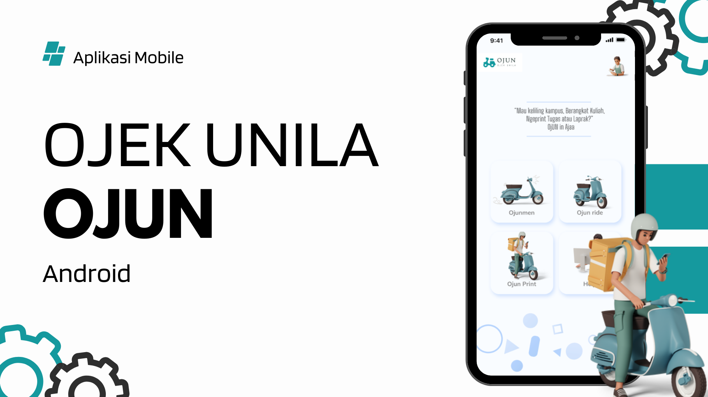
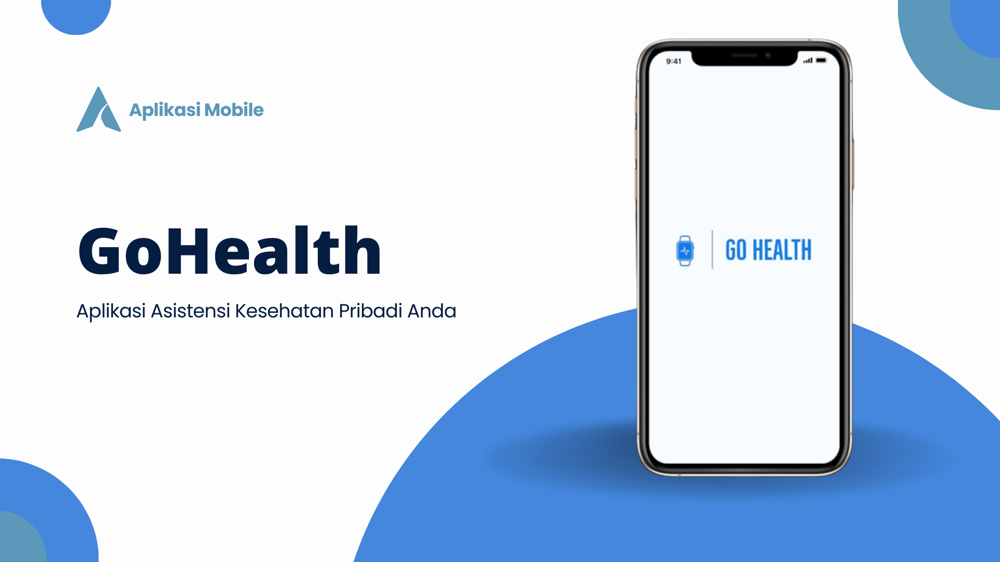
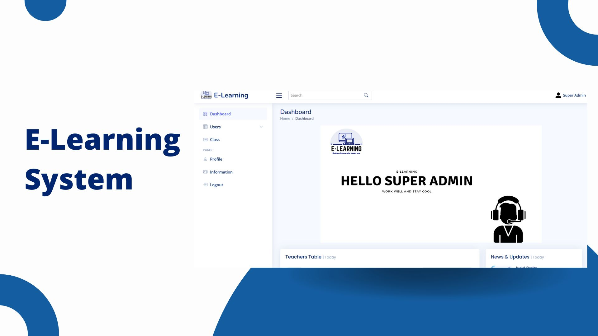
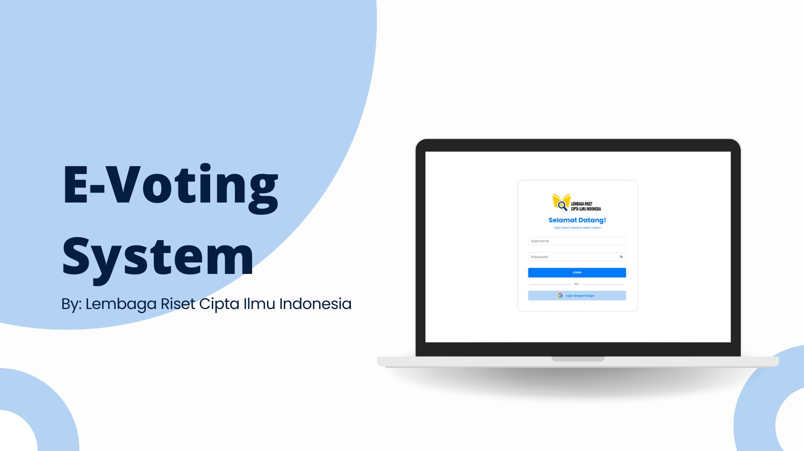
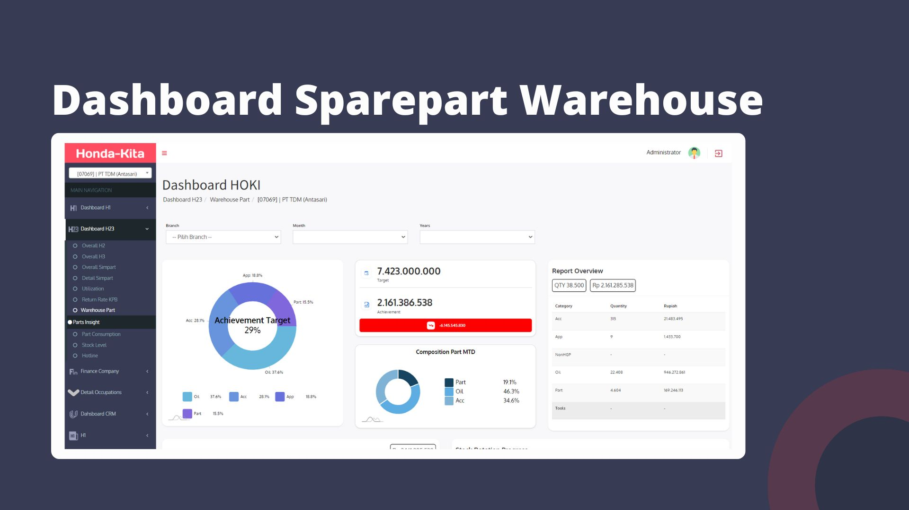

SUMMARY
An undergraduate Computer Science from Lampung University, Bandar Lampung, with a passion for continuous learning and skill development. Eager to contribute my expertise to challenging projects, I seek opportunities to apply my knowledge and gain valuable experience in the field. My approach is characterized by curiosity, focus, thoroughness, effective communication, and agility. My primary areas of interest and proficiency include back end developer, System engineer and full stack developer.
PROJECT

Project 1
Aplikasi Mobile OJUN (Ojek Unila)
View

Project 2
Prototype Aplikasi Mobile GoHealth (Asisten Kesehatan Pribadi)
View

Project 3
E-Learning System
View

Project 4
E-Voting System By Lembaga Riset Cipta IlmuIndonesia
View

Project 5
Dashboard Sparepart Warehouse
View
EXPERIENCE
System Developer Intern at Tunas Honda
February 2024 - July 2024
- Understood and applied basic concepts and principles of accurate and timely documentation in a work environment.
- Designed, implemented, and tested software solutions based on Object-Oriented Programming (OOP) and Development Life Cycle (DLC) concepts.
- Developed new modules or features within applications using Clean Code principles and performed code refactoring to enhance code clarity and cleanliness.
- Analyzed and developed real-world APIs based on case studies from the company or open-source projects, including API structure, endpoints, required parameters, and generated responses.
Assistant Lecturer for Object Oriented Programming
August 2023 - December 2023
- Created and presented over 15 lectures on object-oriented programming, ensuring students comprehended intricate concepts; received outstanding student evaluations, averaging 4.8/5 for clarity and understanding.
- Organized hands-on practice sessions for 15 sessions, strengthening practical concepts and providing experience in understanding object-oriented programming concepts easily.
- Demonstrated proficiency in using java language programming and Integrated Development Environment tools such as NetBeans.
Assistant Lecturer for Operating System
February 2023 - June 2023
- Orchestrated the preparation and execution of 15+ engaging lectures on operating systems, utilizing multimedia resources, case studies, and hands-on activities to foster student understanding; resulted in a 25% increase in student participation and improved overall course retention rates.
- Ensured clarity and accessibility in the presentation of intricate topics, fostering an environment conducive to effective learning.
- Engineering a learning environment that allows students to easily grasp complex operating system concepts, encouraging a valuable experiential learning journey.
Assistant Lecturer for Operating System
August 2022 - December 2022
- Manage learning sessions and provide effective clarification of learning material, making teaching more understandable for students.
- Build collaborative relationships with primary faculty and fellow teaching assistants, creating an efficient and supportive learning environment.
- Assist in the preparation and delivery of course material, ensuring that complex programming concepts are presented clearly and can be understood by students.
Olimpiade Sains Nasional (Olimpiade Sains Akbar Nasional)
August 2022
- In mathematics at the college level.
- Declared as an active participant.
- Recipient of the bronze medal.
ORGANIZATION
Himpunan Mahasiswa Ilmu Komputer (HIMAKOM)
February 2022 - December 2022
- Member of a Badan Khusus at Himakom.
- Carrying out Open Recruitment for Lecturer Assistants, carrying out selection stages (online or offline interviews), preparing practicum or response schedules, create/update SOP, create material-specific modules (C++, web, design), divide groups, look for presenters.
EDUCATION
Computer Science
2021 - 2025
University of Lampung
GPA: 3.95
SKILL
Teamwork, communication, responsible, reliable, focus, thorough, creative, C++, C, Python, Java, SQL, PHP, Codeigniter4, Laravel, Odoo, Django, Git, data understanding, Microsoft Power, machine learning, Internet of Things, MySQL, PostgreSQL, Android Studio, Flutter, Postman, API (Application Programming Interface).
CONTACT ME
You can reach me via email at royraflmp@gmail.com or via the contact form below.
CONTACT